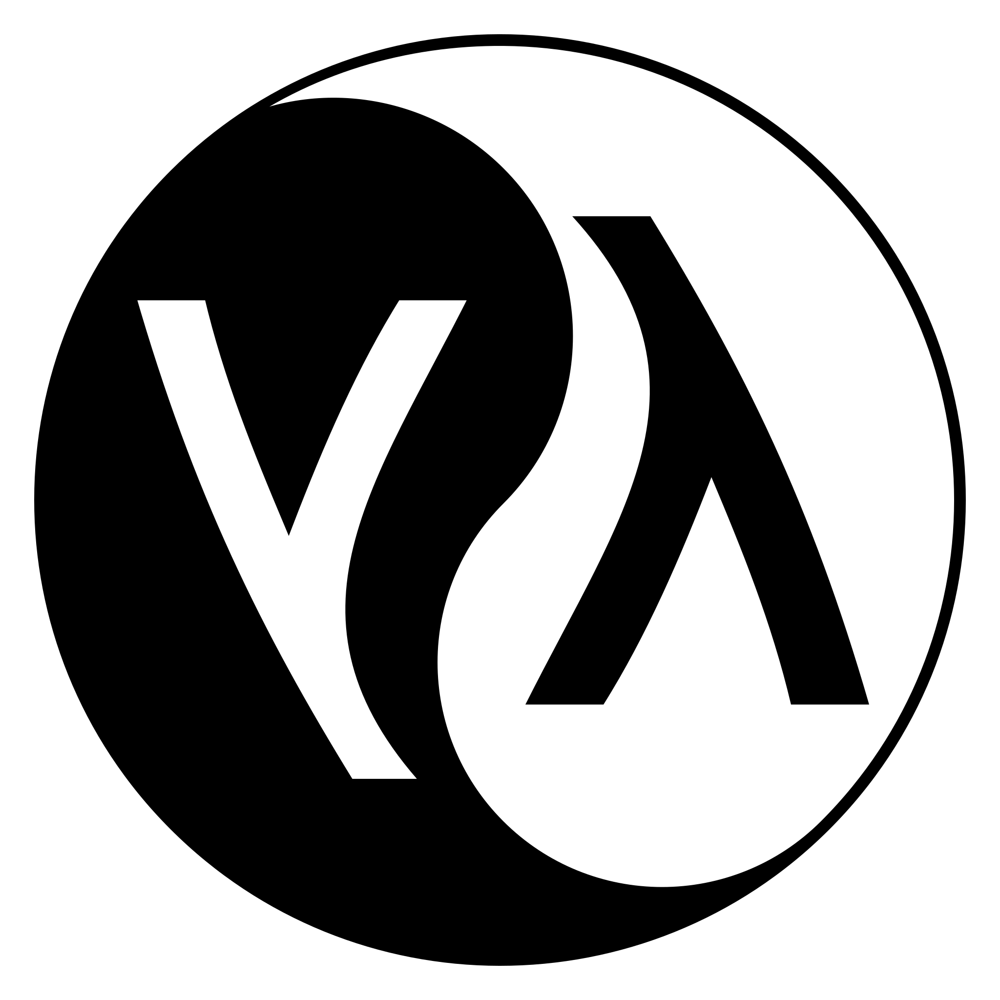

Most Popular Programming Languages
Most Popular Programming Languages List

Python is a high-level, general-purpose programming language. Its design philosophy emphasizes code readability with the use of significant indentation. Python is dynamically typed and garbage-collected. It supports multiple programming paradigms, including structured (particularly procedural), object-oriented and functional programming. It is often described as a "batteries included" language due to its comprehensive standard library. Guido van Rossum began working on Python in the late 1980s as a successor to the ABC programming language and first released it in 1991 as Python 0.9.0. Python 2.0 was released in 2000. Python 3.0, released in 2008, was a major revision not completely backward-compatible with earlier versions. Python 2.7.18, released in 2020, was the last release of Python 2.
C++ (pronounced "C plus plus" and sometimes abbreviated as CPP) is a high-level, general-purpose programming language created by Danish computer scientist Bjarne Stroustrup. First released in 1985 as an extension of the C programming language, it has since expanded significantly over time; as of 1997, C++ has object-oriented, generic, and functional features, in addition to facilities for low-level memory manipulation for systems like microcomputers or to make operating systems like Linux or Windows. It is usually implemented as a compiled language, and many vendors provide C++ compilers, including the Free Software Foundation, LLVM, Microsoft, Intel, Embarcadero, Oracle, and IBM. C++ was designed with systems programming and embedded, resource-constrained software and large systems in mind, with performance, efficiency, and flexibility of use as its design highlights. C++ has also been found useful in many other contexts, with key strengths being software infrastructure and resource-constrained applications, including desktop applications, video games, servers (e.g., e-commerce, web search, or databases), and performance-critical applications (e.g., telephone switches or space probes).
Java is a high-level, class-based, object-oriented programming language that is designed to have as few implementation dependencies as possible. It is a general-purpose programming language intended to let programmers write once, run anywhere (WORA), meaning that compiled Java code can run on all platforms that support Java without the need to recompile. Java applications are typically compiled to bytecode that can run on any Java virtual machine (JVM) regardless of the underlying computer architecture. The syntax of Java is similar to C and C++, but has fewer low-level facilities than either of them. The Java runtime provides dynamic capabilities (such as reflection and runtime code modification) that are typically not available in traditional compiled languages. Java gained popularity shortly after its release, and has been a very popular programming language since then. Java was the third most popular programming language in 2022 according to GitHub. Although still widely popular, there has been a gradual decline in use of Java in recent years with other languages using JVM gaining popularity.